/* cristina-mittermeier - proofs */
12 plates. Deterministic overlays rendered by the composition-analysis skill.
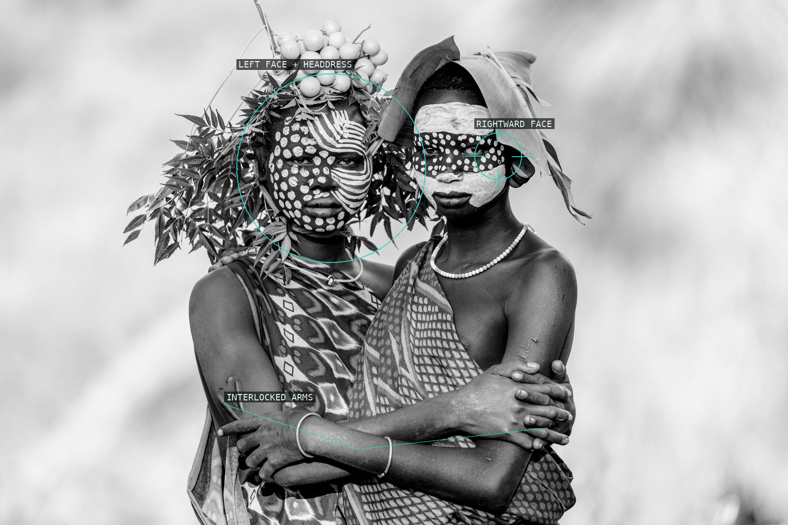
01-sisters
Faces and crossed arms form a compact relational center.
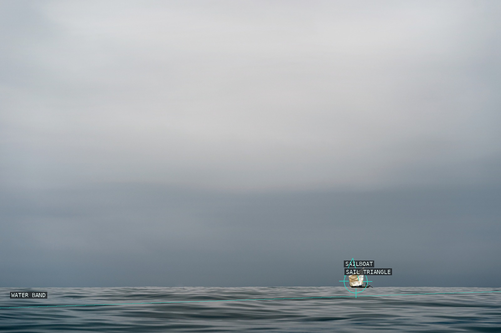
02-alone-ghana
A sailboat punctuates a nearly empty water-and-sky field.
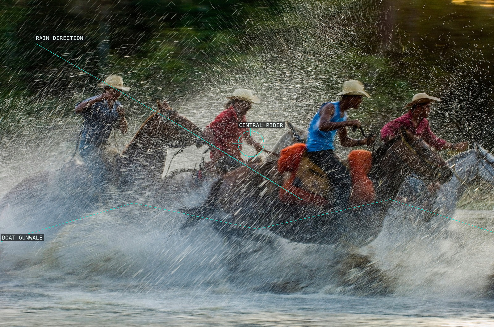
03-pantaneiros
Rain and boat rim bind riders into a moving span.
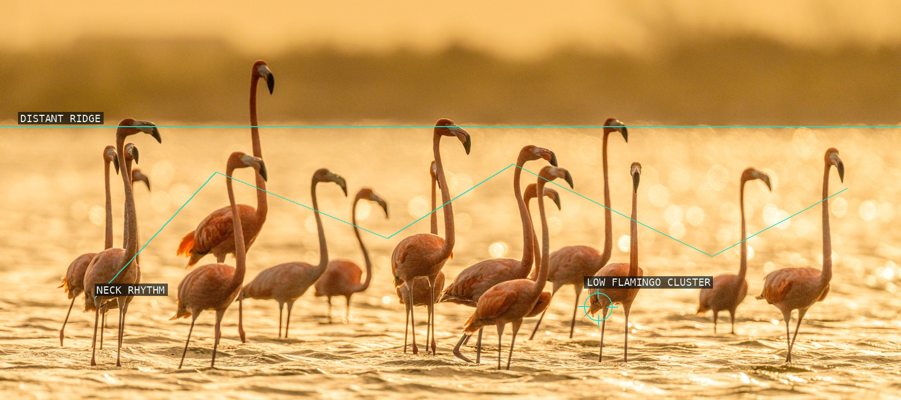
04-all-that-glitters
Flamingo necks repeat across a luminous waterline.
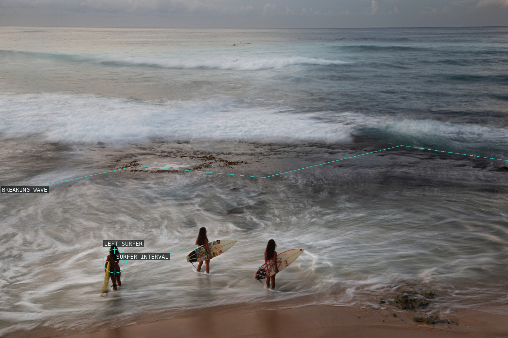
05-heavenly-virtuous-miracle
Surfers are related through interval and surf.
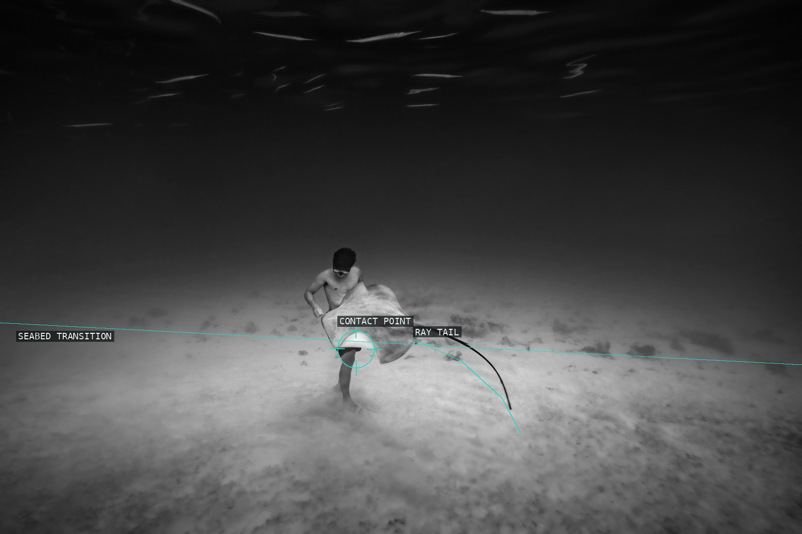
06-alone-together
A small diver-and-ray encounter meets a vast dark field.
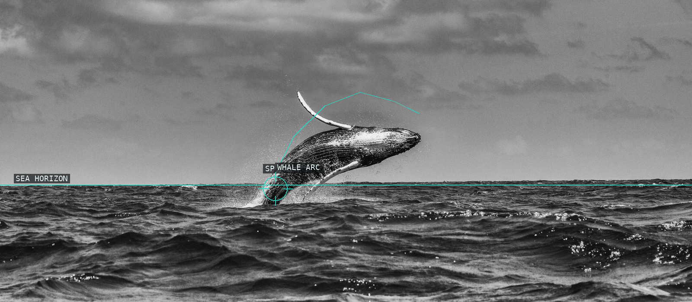
07-leap
A whale arc answers the wide sea horizon.
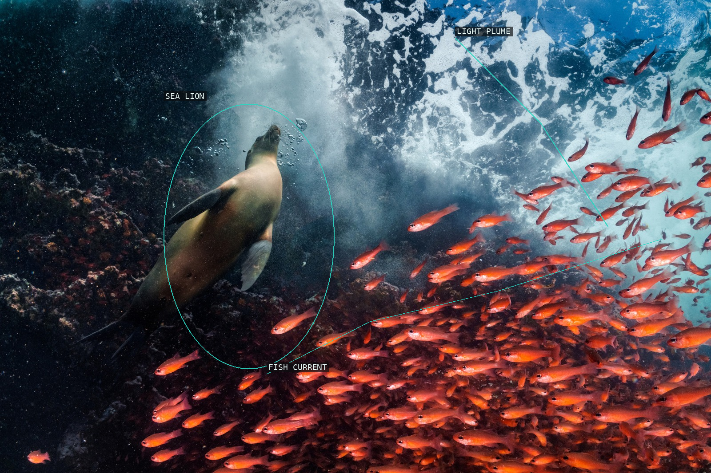
08-red-curtain
Sea lion, fish current, and surface light form an exchange.
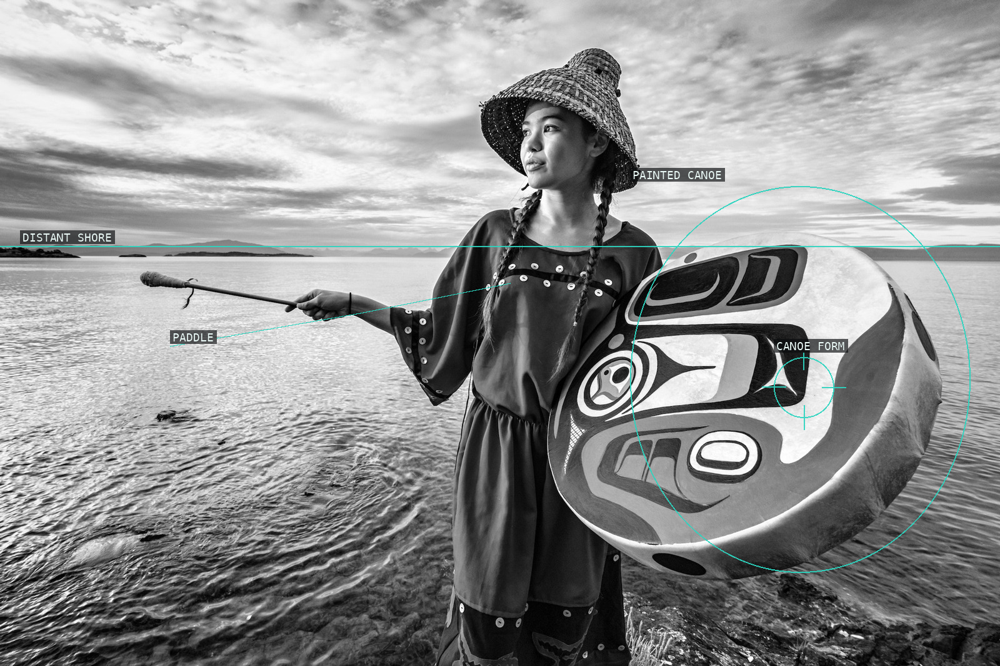
09-takaiya
Portrait, canoe, paddle, and shore share one field.
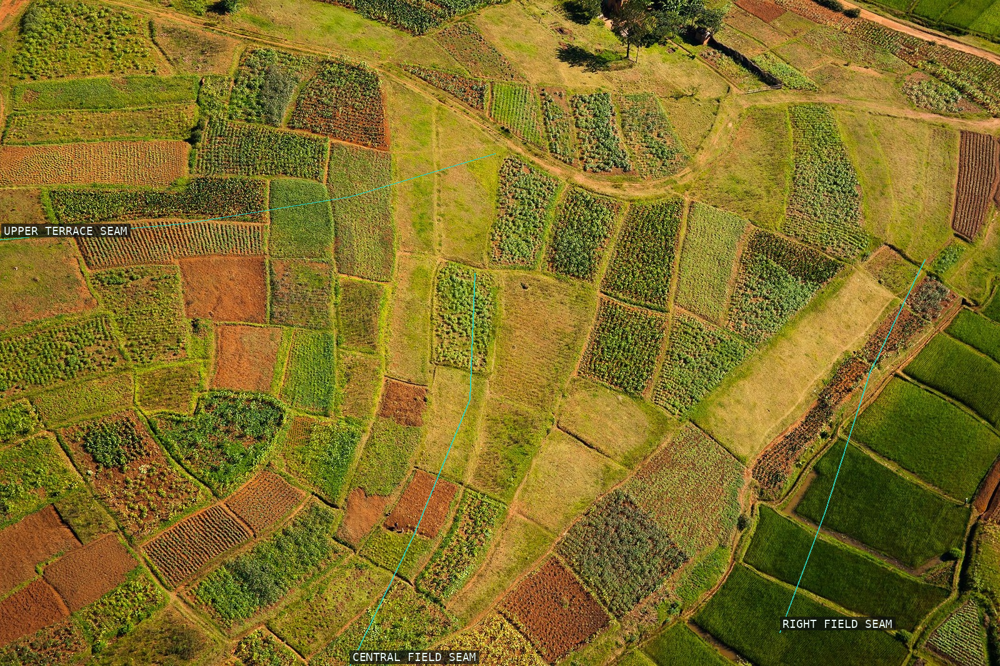
10-rice-paddy-i
Terrace seams organize the cultivated patchwork.
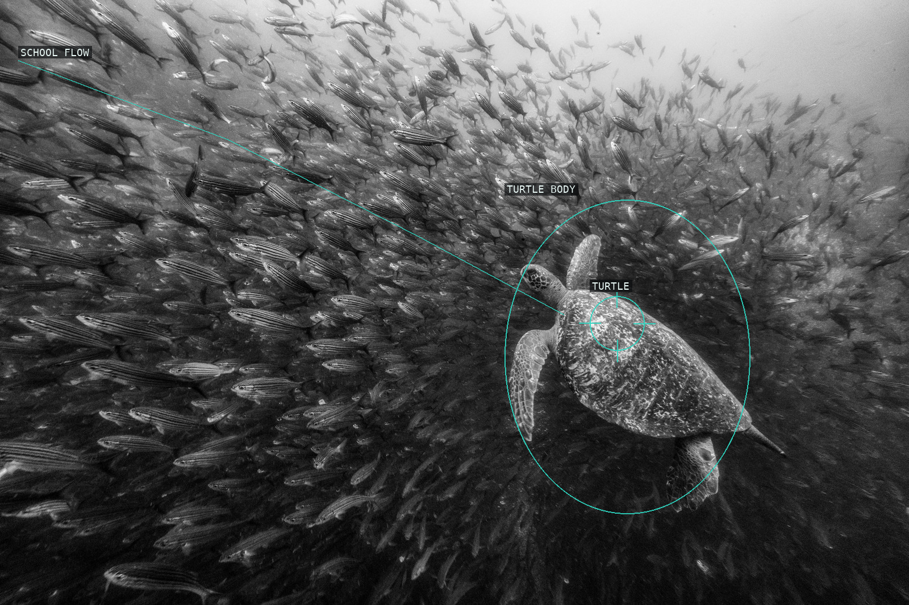
11-the-visitor
A turtle meets the diagonal flow of a fish school.
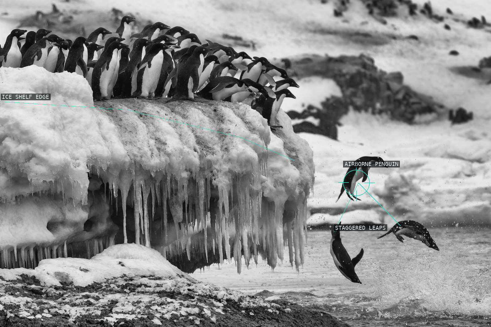
12-leap-of-faith
Staggered penguin leaps break from the ice shelf.